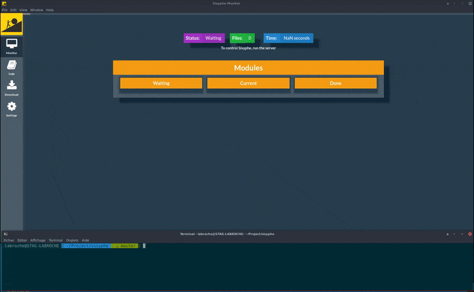

Sisyphe
Sisyphe is a generic NodeJS recursive folder analyser terminal application & a (lerna) git monorepo.

Requirements
Test with NodeJS@8.1, Redis@3.2.6 & ElasticSearch@5.1.1 & XMLStarlet@1.6.1(libxml2@2.9.4)
Install it
- Download the lastest Sisyphe version
- Just do :
npm install - ... that's it.
Test
npm run test will test sisyphe & its workers
Help
./app.js --help Will output help
Options
-V, --version output the version number
-n, --corpusname <name> Corpus name
-c, --config-dir <path> Configuration folder path
-s, --silent Silence output
-h, --help output usage informationHow it works ?
Just start Sisyphe on a folder with any files in it.
node app.js -c folderName ~/Documents/customfolder/corpus
Sisyphe is now working in background with all your computer thread. Just take a coffee and wait , it will prevent you when it's done :)
You should now have a file full of logs in /yourcustomfolder/sisyphe/logs/sisyphe.log (errors,info,duration..)
For a control panel, go to Sisyphe-monitor

Modules
There is a list of default modules (focused on xml & pdf).
Those URL NEED to be updated when merge branch will be ok.
- Sisyphe-FILETYPE Will detect mimetype,extension, corrupted files..
- Sisyphe-PDF Will get info from PDF (version, author, meta...)
- Sisyphe-XML Will check if it's wellformed, valid-dtd's, get elements from balises ...
- Sisyphe-XPATH Will generate a complete list of xpaths from submitted folder
- Sisyphe-OUT Will export data to json file & ElasticSearch database
Developpement on worker
When you work on worker, just:
- Commit your changes as easy
- Do a
npm run updated(to check what worker has changed) - Do a
npm run publish(it will ask you to change version of module worker & publish it to github)